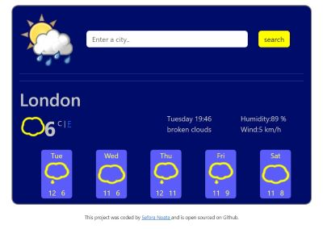
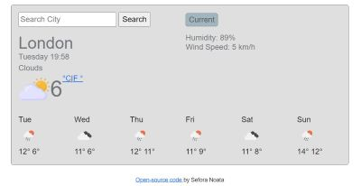

Hi there, I am Sefora,
Front End Developer.
Have a look at my portfolio !
This app has been created using React framework.It has been one of the projects created while learning along SheCodes. I have enjoyed building this app, I have used my creativity designing it and choosing the layout features. For the functionality of the app, I have installed an API, too.Press the button bellow if you would like to try it.
This is another app which I have created using React Framework. I have to say that the time required to build it was less comparing with other app created using pure Java Script.I could say the same about the level of difficulty, too.
Weather app- this app has been created using pure Java Script. I do remember as being quite complicated to build, however I have improved my coding skills while building it and the final results definetelly deserved all the efforts.
Another project while learning with SheCodes! This project it seemed so easy to me, as I have had the opportunity to mix one of my hobby- mountains travelling- and coding. I had the opportunities to use different CSS tools for making the project responsive and I have not been dissapointed about the final results.It will remain a project close to my heart.
.jpg)
Although a simple app, while building the the World Clock, I have learnt more about how to use the time data - which varies depending of your location- in coding.Was a nice and interesting project!

In the AI project, I have used techniques of prompting and creating an context, to maximise the AI accuracy answers.
See more details about myself on the resume attached